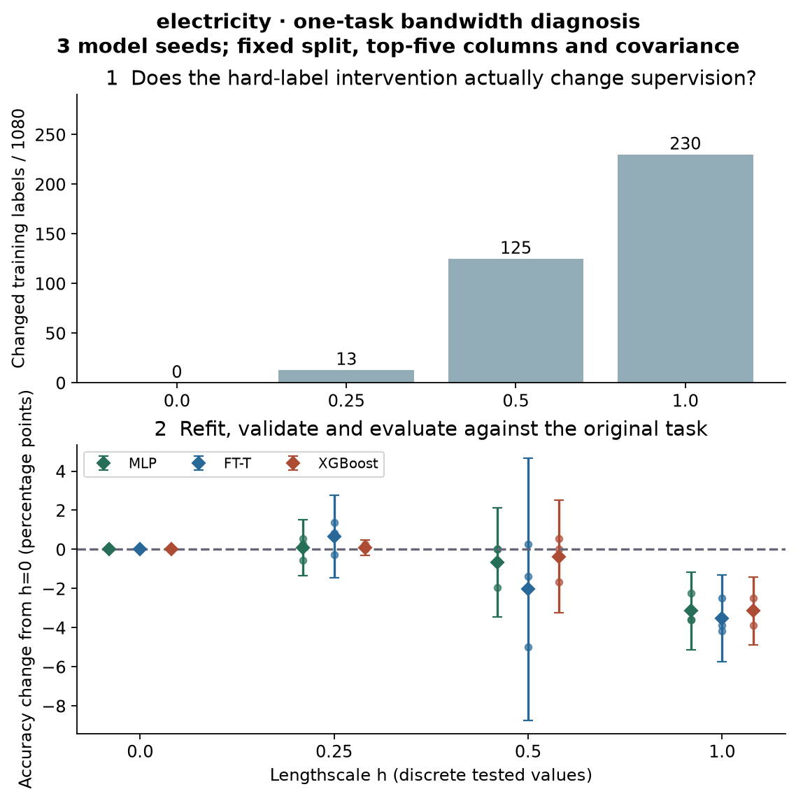

Year 2 · Quarter 2 · Lesson 051
Why trees still win
Re-derive three biases. Design the intervention that could expose each one.
Lesson 50 gave you a fair comparison between models. Now make the harder move. Instead of only measuring which model scores higher, you will explain why one wins by changing one property of the learning problem and watching how each model reacts. This matters for the relational thesis: a learned representation must beat a strong tabular baseline for a reason you can actually test, not just by a number on one benchmark.
In plain terms. A controlled change is like a lab experiment. You keep everything the same except one thing, flip that one thing, and see who changes the most. If the tree collapses when you erase fine detail but the network barely notices, that difference tells you what each model was relying on.
Your tangible win: an intervention report that names what changed, what stayed fixed, the measured effect, and a conclusion the experiment cannot support. Start with the three worked examples; then complete the companion lab over one or more study sessions.
Recall before reading
The argument of this lesson
Turn a performance gap into a falsifiable explanation
A fair comparison can establish a gap without explaining it. This paper makes the explanation testable by changing the learning problem in controlled ways. Smoothness, orientation and irrelevant features are connected through one question: what structure does each model find easy to learn? Keep the intervention and its preserved quantities separate in every branch.
1. A bias is a preference, not a prohibition
See the whole solution
Change the problem; observe which bias helps
Trace before reading: Which intervention changes coordinates while preserving predictive information?
Read every component and connection as text
- One dataset, one split: baseline features and labels; freeze candidate recipes. Connects to Smooth targets; Rotate features; Add irrelevant columns.
- Smooth targets: remove short-scale variation; the target itself changes. Connects to Refit tree and network.
- Refit tree and network: same declared budget / split; compare paired errors.
- Rotate features: invertible coordinate map; information is retained. Connects to Refit tree and network.
- Refit tree and network: same declared budget / split; compare paired errors.
- Add irrelevant columns: keep target fixed; increase nuisance inputs. Connects to Refit tree and network.
- Refit tree and network: same declared budget / split; compare paired errors.
↔ On narrow screens, scroll horizontally to see all branches. The text route above reflows to your screen.
Pictured scope. Experimental design from the lesson. Each branch has its own declared intervention and matched comparison; no universal winner is encoded.
{kind=link}
In plain terms. A model's bias is not a wall it cannot cross; it is a habit. Given many explanations that all fit the data, the model leans toward one kind. It can draw the others, but from a limited sample it usually will not.
An inductive bias is the preference a learning procedure uses to choose among explanations that all fit the same limited training data. Here is the key distinction. A neural network may be able to represent a jagged boundary. It may still fail to learn that boundary with a particular optimizer, sample size, regularization and training budget. Two separate words name these two ideas. Expressivity describes what a model can represent. Learning behavior describes what training actually finds.
Read Grinsztajn, Oyallon & Varoquaux (2022), §5 first. Its experiments connect neural/tree differences to irregular targets, irrelevant columns and feature orientation. They concern a defined tabular benchmark and specified training procedures, not an eternal ranking of model families. We reconstruct the interventions and test a new, explicitly local protocol.
| Hypothesis | Intervention | Required control |
|---|---|---|
| A learner misses short-range label variation | Smooth training targets | Keep evaluation labels and selected features fixed |
| A learner depends on named coordinates | Apply one rotation to all splits | Keep rows, labels and information fixed |
| A learner is sensitive to irrelevant inputs | Append independent noise columns | Retain original columns and their values |
Notice what each row of that table has in common. Each intervention changes something other than “the model name.” A clean protocol lets us identify a response to that intervention. It does not prove that only one internal mechanism caused the response. This lesson is a synthesis of L025, L026 and L027, now with stronger controls. No new architecture is introduced.
Capacity is not the same as a learning preference¶
A sufficiently large network may represent a jagged decision boundary. That statement concerns its function class. Whether the training procedure finds that boundary from a finite sample concerns initialization, optimization, regularization and data representation. Inductive bias is the preference that these choices impose among explanations compatible with the observations.
A small axis-aligned tree can represent “x₁ exceeds a threshold” with one split. A tilted boundary may require many rectangular pieces. A neural network can represent a tilted linear boundary compactly, but its optimization may still favor smooth variation over rapidly alternating labels. Neither description says one family is incapable of the other's function. It predicts different sample and optimization costs under a controlled change.
The experiments in this lesson are interventions on a learning problem. We hold a baseline protocol fixed, modify one property, and compare the change in performance. The useful quantity is often a difference of differences: did the neural model change more than the tree when the same intervention was applied?
Worked example. Suppose the original accuracy scores are tree 0.84 and neural 0.78. After smoothing they are 0.79 and 0.78. The gap shrank from 0.06 to 0.01, but read why: the tree lost five percentage points while the neural model did not improve. Now put that in difference-of-differences form. Define Δ(model)=accuracy(smoothed)−accuracy(raw), using the same held-out targets. Here Δ(tree)=−0.05, Δ(neural)=0, and Δ(neural)−Δ(tree)=+0.05. This is the direction of reasoning behind the paper's small-lengthscale finding, not its measured numbers. A smaller gap alone does not tell you whether either learner became better.
Before running, write both a prediction and a rival explanation. A smoothing intervention can change label noise, class balance and effective task difficulty as well as local variation. If several properties change together, the observed effect does not isolate a single cause. Your interpretation must follow the intervention actually implemented.
Read a benchmark claim at the scale it was measured¶
The paper contains two connected investigations. Sections 3–4 compare tuned learning procedures; Section 5 manipulates numeric classification tasks to investigate their biases. Its dataset selection excludes several important deployment problems, including missing-data handling, highly imbalanced classification and high-dimensional tables. A benchmark winner under those restrictions is a serious baseline, but the conclusion does not automatically cover fraud imbalance, sparse text columns or temporal forecasting. See paper v1 §§3–5.
The published comparison considers a search budget: the number of hyperparameter configurations tried, including a default first candidate. At each budget, choose the candidate with the best validation score, then report that candidate's test score. Reordering the same pool of fitted candidates simulates different search histories. It does not create new independent test datasets. This distinction explains why our three model-seed t intervals and the paper's search-order ranges answer different questions.
Work through a synthetic search history. Candidates A, B, C have validation accuracies (0.80, 0.83, 0.82) and test accuracies (0.79, 0.78, 0.85). The order A→B→C reports test scores (0.79, 0.78, 0.78). Adding C does not select its 0.85 test score because selection uses validation. The best validation score cannot decline as the budget grows; the selected test score can. Reporting a running maximum of test accuracy would secretly tune on the test set. Repeatedly inspecting this diagnostic and choosing a new intervention because its test result looks persuasive is another form of selection: record those choices as exploratory.
The local experiment instead fixes one recipe per model family. It asks, “How sensitive is this specified training procedure?” A repeated search after each transformation asks, “How well can the family adapt within this search space and budget?” Both are useful; they are different estimands, meaning different quantities the experiments seek to estimate. Strong causal language about an architecture requires considering the optimizer, feature representation and selection procedure too.
2. Smoothness: remove local label variation
A bias is useful only relative to a problem. Start by changing short-scale target variation while holding the comparison recipe fixed. If the performance gap changes, that is evidence about sensitivity to this intervention, not a complete theory of tabular learning.
In plain terms. Smoothing blurs the training labels. Each row's label is replaced by a weighted vote of its nearby rows, so tiny bumps that only one or two rows created get averaged away. We then ask: which model misses those bumps once they are gone?
Smoothness means nearby feature vectors tend to have similar outputs. In a one-dimensional signal, high-frequency variation is detail that changes rapidly over short distances. A threshold tree can place a sharp jump at one coordinate value, so it captures such detail easily. A neural learner tends to favor broader changes during fitting; the primary theoretical and empirical discussion is Rahaman et al. (2019). This is a learning tendency, not a claim that ReLU networks cannot draw sharp boundaries.
Build the smoother one piece at a time. We construct a local average of the labels, and each symbol gets its own sentence.
- Let xᵢ be training row i and yᵢ its binary label.
- Let C be a covariance matrix fitted on the training features. Covariance describes how much each feature spreads and how features move together; its inverse measures distance in units of that spread, so a wide feature does not automatically dominate.
- Let h be a nonnegative lengthscale: the knob that sets how large a neighborhood counts as "nearby."
With those pieces, the squared distance between two rows is d²ᵢⱼ = (xᵢ − xⱼ)ᵀ C⁻¹ (xᵢ − xⱼ). Turn each distance into a weight that shrinks as rows get farther apart: wᵢⱼ = exp(−d²ᵢⱼ / (2h²)). Finally take the weighted label average, pᵢ = Σⱼ wᵢⱼ yⱼ / Σⱼ wᵢⱼ. The denominator makes the weights sum to one, so the result always stays between zero and one.
What happens at the endpoints. The query row is also its own neighbor: its distance to itself is zero and its weight is one. At h=0 we explicitly return the original targets, so nothing is smoothed. For positive h, larger neighborhoods mix in more distant labels. In the pinned released classifier, the next step turns the averaged probability back into a hard label with new_y = (p > 0.5). A probability of exactly 0.5 becomes label 0. Our lab preserves this hard-label step.
Predict: for rows x=(0,1,2), labels y=(0,1,0), C=1, will the middle label survive at h=1?
Worked example. Take rows x=(0,1,2) with labels y=(0,1,0), C=1, at h=1. The weights into the middle row x=1 are approximately (0.607, 1, 0.607). Only the middle row carries a positive label, so its averaged probability is p=1/2.213≈0.452. Because 0.452 is not above 0.5, its hard label flips to 0: the lone positive bump does not survive. This is a computed synthetic example, not a reported dataset score.
What stays fixed in the lab. First select up to five features using training-only random-forest importance. Then fit the covariance and the transform on training rows only. Compare unsmoothed and smoothed training labels on exactly those same five columns, and leave validation and test labels unchanged. The reason for that discipline: comparing full-feature raw data against five-feature smoothed data would confound smoothing with feature removal, so you could no longer say which change moved the score.
Scope check. The algorithm audit checks the released smoother on nonsingular empirical and coupled-seed robust-covariance examples, and the lab adds an explicit numerical eigenvalue floor. Neither check establishes full training parity.
What a neighborhood smoother computes¶
A weighted smoother replaces a target by a local average: s(x)=Σᵢwᵢ(x)yᵢ/Σᵢwᵢ(x). The weights express which training examples count as neighbors. With targets (0,1,1) and weights (0.6,0.3,0.1), the smoothed value is 0.4. A different bandwidth changes the weights, and therefore changes how much local variation survives.
Small neighborhoods preserve sharp changes but are sensitive to individual observations. Large neighborhoods reduce local variation and can wash out real boundaries. The extreme case of equal weight on every training row predicts the global training mean at every location. This endpoint is a useful sanity check: if your implementation still varies across queries under equal global weights, it is computing something else.
The source of the targets used in the smoother matters. When a training-based target function is evaluated at validation or test features, its reference labels must come from the training partition. Using each evaluation row's original label to construct the target being predicted can alter the information boundary. Read the local intervention's fit scope before interpreting its curve.
Distance also depends on preprocessing. A column measured in thousands can dominate a Euclidean neighborhood over a column measured in fractions. Fit the distance transform on training data and keep it fixed across the paired comparisons. Otherwise a “smoothing strength” knob may partly be a feature-scale knob.
For classification, a continuous local class proportion and a thresholded binary label are different targets. Thresholding can introduce new discontinuities and change class balance. State whether the experiment predicts a probability, a transformed regression target, or a newly thresholded class. Do not transfer an interpretation between these variants without checking it.
Why destroying detail can diagnose what a learner used¶
In §5.2 and Fig. 3, modest training-target smoothing hurts tree scores more than neural scores. Evaluation still asks about the original task. If a tree had exploited fine local changes that help predict those held-out labels, removing those training changes deprives it of something useful. If the neural procedure already ignored them, there is less to lose. This is evidence consistent with a learning preference for smoother solutions; it is not evidence that smoothing is a universally beneficial preprocessing step.
Separate three operations: change the training labels, choose a checkpoint using raw validation labels, then score against raw test labels. Smoothing validation/test labels as well would redefine success. Using raw validation labels is still supervised adaptation to the original task, so our result describes the complete training-and-selection procedure. Early stopping can partly compensate for a harmful training transformation; that is one reason to inspect selected epochs along with scores.
The covariance form explains the bandwidth units. Write C=U diag(λ₁,…,λ_d) Uᵀ, where U's orthogonal columns are principal directions and λₖ is spread along direction k. For δ=xᵢ−xⱼ, the squared distance is Σₖ(Uᵀδ)ₖ²/λₖ. Multiplying all features by 3 multiplies every λₖ by 9, cancelling the squared change in the numerator. Multiplying h by 2 instead divides the kernel exponent by 4: the same distance gets more weight. The Gaussian density's common determinant and normalization constants cancel in the ratio, which is why the notebook can use an unnormalized exponential. The source's cov_mult is h², not h.
An eigenvalue near zero makes small differences in that direction enormous after division. Our explicit floor keeps the distance defined, but it changes the metric in those directions. The released robust-covariance fallback can switch to an empirical covariance without reapplying cov_mult; our code does not reproduce that fallback. Source parity is therefore limited to well-conditioned cases. Saving the covariance, floor and warning makes the intervention reviewable.
Two endpoints expose bugs and limits. As h→∞, weights approach one and every probability approaches the training positive fraction; thresholding can collapse the labels to one class. Such a point is a failed binary-training condition to report explicitly, not silently omit. As h→0⁺, distinct rows retain their own labels, but duplicate feature vectors with conflicting labels still average each other because their distance stays zero. The explicit h=0 branch returns the original labels even for duplicates. Thus “zero bandwidth equals no smoothing” is a baseline convention; continuity at zero is not guaranteed. CHECK this on two identical rows labelled 0 and 1.
Diagnose bandwidth before explaining the score¶
The additional electricity experiment varies h over 0, 0.25, 0.5 and 1 with the same selected columns, covariance, split, recipes and three model seeds. First inspect the number of changed training labels and the positive fraction. Then inspect paired accuracy differences and selected epochs. If h=0.25 changes no hard labels, identical seeded training should match the h=0 baseline; a score difference would reveal some other changed input or state. If many labels change but accuracy barely moves, robustness is one explanation, but early stopping and limited precision remain alternatives. A hard-label smoother can alter its probabilities without altering the labels used in the loss.
This is an added one-task diagnostic, executed separately from the historical five-condition experiment. It starts to reconstruct the curve-shaped question in Fig. 3; it does not reproduce the paper's tasks, search distributions or aggregate plot. The live notebook computes it using your smooth_targets and paired_effect functions. Report an inconvenient curve rather than selecting a bandwidth that makes the intended story look true.
3. Orientation: preserve information, change the easy boundary
Smoothing changed the target relationship. Rotation offers a different probe: preserve information while changing the coordinate system. This helps separate a model’s preference for axis-aligned structure from the amount of signal available.
In plain terms. A rotation spins the coordinate system without moving the data points relative to each other. Every distance between rows is unchanged, so no information is lost. What changes is whether the useful boundary lines up with the named columns — and trees care a lot about that alignment.
An orthogonal matrix R is one that satisfies RᵀR=I, where I is the identity matrix that leaves a vector unchanged. Our random rotations also have determinant +1. Here is how we apply one. With rows stored in a matrix X, transform them as X′=XR. Since the inverse of an orthogonal matrix is just its transpose (R⁻¹=Rᵀ), the product X′Rᵀ recovers the original X, so nothing is thrown away. Pairwise squared distances are preserved too: ‖(xᵢ−xⱼ)R‖² = ‖xᵢ−xⱼ‖². In short, rotation mixes coordinates without removing information.
An axis-aligned split asks about one coordinate, such as x₀>0.4. After a general rotation, the same boundary depends on a linear combination of coordinates. A finite tree may need several rectangular regions to approximate it. At a 90° rotation, however, the axes merely exchange roles with a sign change: the boundary is easy again. Rotation angle is not a universal difficulty scale.
For a neural first layer, use row notation H = XWᵀ + b, with X shaped [rows, features], W [hidden units, features], and b [hidden units]. Choose W′=WR. Then (XR)(WR)ᵀ = XRRᵀWᵀ = XWᵀ. All later layers receive exactly the same H. This proves representation equivalence with transported weights.
That equivalence is about representation, not about training. It does not prove that two independent training runs would actually find those transported weights. Exact rotation-equivariant gradient-descent trajectories need transported initialization, corresponding minibatches, and compatible regularization. A concrete obstacle is the optimizer itself: Adam rescales gradients coordinate by coordinate, and that rescaling does not commute with rotation.
Worked example. Take a first-step gradient (1,0) and ignore its small numerical epsilon. Its normalized direction is (1,0). Now rotate that gradient by 45° and normalize each coordinate: you get (1,−1). But if you instead rotate the update that came from the original gradient, you get (0.707,−0.707). The two results differ, so the rotated run and the original run take different steps. Our AdamW lab therefore measures approximate sensitivity and never demands identical trained predictions.
Protocol: Gaussianize each feature using training-only quantiles, then apply one seeded R to all three splits. Do not fit another per-coordinate scaler after rotation: it changes the transformation you intended to test. A fresh matrix per split would instead create mismatched coordinate systems. Per-feature tokenization in FT-T treats named coordinates separately, so it does not inherit the dense-first-layer argument as a whole-model guarantee.
Rotate the coordinates while preserving the problem¶
An orthogonal matrix R satisfies RᵀR=I. Therefore the transformed difference between two rows has the same squared length: ‖R(x−z)‖²=(x−z)ᵀRᵀR(x−z)=‖x−z‖². Rotation preserves Euclidean information and distances; it changes how that information is aligned with individual coordinates.
Take the rule x₁>0 in two dimensions. Define u=(x₁+x₂)/√2 and v=(−x₁+x₂)/√2. Then x₁=(u−v)/√2, so the same rule is u>v. It was a single vertical threshold in the original coordinates and is a diagonal boundary in the new coordinates. An axis-aligned tree now needs a staircase approximation unless the sample happens to make the boundary trivial.
The intervention must use one fitted or sampled rotation for every partition. Rotating training and test with independent matrices destroys the shared coordinate meaning. That tests a schema mismatch, not sensitivity to axis alignment. Keep row identities and labels unchanged so the old and new losses remain paired.
Rotation can also change marginal feature distributions even though joint information is preserved. A preprocessing pipeline that re-estimates a separate nonlinear transform after rotation may produce an intervention larger than a pure orthogonal change. This is why the order of standardization, rotation and model-specific transforms belongs in the experimental description.
Do not say a model is “rotation invariant” merely because its average score barely moved. Architectural invariance would mean a precise relationship between functions under every allowed rotation. Empirical robustness means the measured procedure changed little under the tested rotations. The second is valuable evidence; it is a weaker and more appropriate claim here.
Why column identity changes the architecture question¶
An MLP mixes all d inputs immediately in XWᵀ. Transporting W can undo a rotation before any nonlinearity, but the learner still has to find useful weights. FT-Transformer starts with a different restriction: token j is tⱼ=xⱼwⱼ+bⱼ, so the first representation preserves the identity of a single named input. After rotation, t′ⱼ=(ΣₖxₖRₖⱼ)w′ⱼ+b′ⱼ contains a mixture of original features. A per-token weight cannot generally undo that mixing by itself; later attention must reconstruct useful combinations. Attention provides capacity, not a guarantee of the same fitting trajectory.
A DCNv2 cross layer repeatedly multiplies an evolving representation by its original coordinates; it too privileges the supplied basis. A soft tree split or TabNet feature mask can favor a few coordinates, but neither guarantees immunity to noise or arbitrary rotations. These are architectural hypotheses to test with the same controls, not a ranking inferred from block names. Conversely, distance-based retrieval using fixed Euclidean distance would preserve neighbors under a shared orthogonal rotation; a learned encoder or per-column preprocessing may not. This distinction prepares the question for TabR: is an observed change coming from the distance geometry, the encoder, or retrieval training?
The mission example is concrete: age, income and a count of recent transactions have distinct meanings. A representation that mixes them invertibly retains information but may remove a useful coordinate prior for a small-sample tree. A relational representation may add genuinely new neighbor information as well as changing coordinates. Before crediting graph structure for an improvement, compare against tabular controls that receive the same legally available information and an appropriate representation. Rotation alone adds no relational information.
4. Irrelevant columns: separate “no signal” from “no harm”
Rotation redistributed signal across coordinates. Adding irrelevant columns asks whether extra input dimensions can hurt even without changing the target. The contrast connects feature selection to optimization and model bias rather than to information loss alone.
In plain terms. A junk column carries no real signal, but a tree gets to search it anyway. With enough junk columns, one of them will look useful by pure luck on the training rows. The question is which model gets fooled and which shrugs it off.
A feature is uninformative about the target if observing it adds no predictive information in the population. To build that condition, we generate new column values independently of the rows and the labels. One caution follows immediately: population independence does not force the finite-sample correlation to be exactly zero. More columns simply create more chances to find a spurious pattern.
Why a tree is tempted by junk. A tree searches candidate thresholds and selects the split with the largest training improvement. To measure improvement it needs a purity score. For a binary node with positive fraction p, the Gini impurity is 2p(1−p): it is zero for a pure node and 0.5 for a perfectly balanced one. The split gain is then the parent's impurity minus the child impurities, each weighted by how many rows fall into it. The widget searches all between-row thresholds across 32 fixed synthetic training labels. The key consequence: each new noise column adds another candidate the tree can maximize over.
The maximum observed gain can only stay the same or increase as candidates are added. Trees therefore can overfit irrelevant features; their robustness is empirical and depends on sample size, depth and regularization. An MLP with H first-layer units gains H parameters per extra input. That is an accounting fact, not a theorem that its test score must fall or that it cannot learn zero weights.
Protocol: append 2d independent standard-Gaussian columns to a d-column input, making 3d columns. Use different draws for train, validation and test while keeping the same column interpretation. The figure-caption distribution and the released code are not identical: the code matches sampled training-column means and interquartile scales. Our experiment explicitly follows the standard-normal description and records the difference. Noise features are not the same as redundant features: a duplicate of a useful column can still predict the target.
The link to orientation is instructive: if useful information resides in a small set of named columns, a method that exploits that basis can search for those columns directly. After dense mixing, the same signal may be spread over many coordinates. This motivates a testable hypothesis, not a universal rule for all tabular learners. See Ng (2004) for the conditional worst-case sample-complexity result.
An irrelevant feature still creates work¶
A feature can be independent of the target in the data-generating distribution and nevertheless have accidental sample correlation. If you inspect many independent noise features and select the most correlated one, the selected feature will usually look more useful than a randomly chosen noise feature. This is selection on estimation noise, the same mechanism that later appears in validation overfitting.
Adding columns also changes computation. An MLP's first weight matrix grows with input width; an attention model may pay a quadratic feature-token cost; a tree searches more candidate splits. A performance change can therefore combine statistical distraction with a changed effective budget. Record feature count, parameter count when relevant, and realized training time.
Generate noise independently of targets and preserve the intended distribution across partitions. Copying target-derived values and then shuffling only the test column is not an irrelevant-feature experiment; it creates a train/test relationship change. Reusing a random generator without considering its call sequence can also accidentally change the original data when you intended only to append columns.
Use a paired intervention: save the original rows, append a reproducible noise matrix, and keep the original train/validation/test IDs. Repeat noise generation if the conclusion is sensitive to one realization. A single lucky noise column should not become a general claim about a model family.
Turn an unexpected result into a discriminating experiment¶
Suppose the neural model improves after adding noise. First check whether the original inputs and selected recipe stayed fixed. Then consider regularization or optimization effects before declaring noise beneficial. Compare fixed hyperparameters with reselected hyperparameters; these answer whether the architecture tolerates noise directly and whether the whole procedure can adapt to it.
The exit explanation should identify the observed effect, the manipulation that produced it and at least one unresolved alternative. That is a stronger research habit than adjusting the story until every measured curve matches the paper's motivation.
Removing a column does not establish that it was uninformative¶
Suppose columns a and b are identical copies of a strong predictor. Training on a alone performs well, so deleting b does not hurt. Yet b alone also predicts well: it was redundant, not uninformative. This is why the paper's Fig. 4 / Appendix A.4.2 compares training on the retained columns and training on the discarded columns. If both retained-only and discarded-only models perform well, redundancy is plausible. If only retained columns work, that supports weak usefulness of the discarded group for the tested learner.
Even that is conditional. Two binary features can each be marginally independent of an XOR target while jointly determining it (XOR is 1 precisely when the two bits differ). An importance ranking can miss interactions or be unstable under correlated columns. Training a finite model on a discarded block and obtaining a low score does not prove zero mutual information. Fit the ranking on training rows, use the same ranking for every model arm, and inspect both feature subsets under a declared budget. The current top-five baseline supports the smoothing control; it is not the paper's retained/discarded feature sweep, which remains unrun.
For added noise, say independent of the whole original input and target, not merely “zero correlation with the target.” Zero linear correlation permits nonlinear signal: if Z is a symmetric random variable and Y=Z², their covariance can be zero while Z determines Y. Our generated Gaussian columns use no labels or original feature values, so independence is built into their generation. Sample correlations can still be nonzero.
Before the EXIT, teach this back without model names: one intervention removes supervised detail, one preserves joint information while changing coordinates, and one appends population-independent dimensions. State which one can change the best prediction task under the true data distribution and which ones primarily change the learner's statistical or computational burden. The raw held-out task remains the same in our scoring; smoothing changes what supervision the learner receives.
5. The local experiment you will reconstruct
In plain terms. This section is the exact recipe card for the experiment. Everything is pinned down in advance — datasets, rows, splits, preprocessing, model sizes, seeds, and the statistics — so that when the results arrive you already know precisely what they can and cannot prove.
Implementation scope: key parts. You implement smoothing, consistent rotation, independent noise insertion and paired effects. The notebook displays the complete numeric MLP and FT-T reused from L050, together with the train loop. XGBoost is an existing packaged baseline. This lesson tests intervention mechanisms; it does not introduce or reimplement a new booster.
Data: the authors’ January 2023 numeric-classification release, OpenML suite 337: electricity (44120), MagicTelescope (44125) and bank-marketing (44126). Each local task takes 1,800 rows selected without inspecting labels, then stratifies them into 60/20/20 training/validation/test partitions with split seed 51. Model seeds are 0, 1 and 2. The source paper read here is v1 from 2022, so this later dataset release is a named fidelity difference.
Preprocessing: fit QuantileTransformer only on training rows. It maps each value’s training percentile to the corresponding standard-normal quantile, making marginal feature distributions approximately Gaussian. Smoothing uses a training-only top-five ranking, MinCovDet robust covariance, h=0.5 and hard labels. MinCovDet estimates covariance from a central subset to reduce outlier influence. An eigenvalue measures spread along a covariance direction; flooring very small eigenvalues makes its inverse numerically usable. The eigenvalue floor prevents numerical singularity; the resulting matrix is saved, and covariance warnings are recorded in the executed solution. Transformation seed 51 is fixed across model seeds. There is no claim about uncertainty across fresh rotations or noise realizations.
Training: two-hidden-layer width-64 MLP; numeric d=32, two-block, four-head FT-T with ReGLU; depth-4 XGBoost. Neural caps are 20 epochs, tree cap 120 rounds, with patience 12 on validation loss. Neural batch size is 256, AdamW learning rate 0.001 and weight decay 10⁻⁵. Tree learning rate is 0.05, row subsampling 0.8. Fixed recipes isolate sensitivity under these procedures; they do not allocate equal wall-clock budgets or reproduce the paper’s hyperparameter searches. We restore the best validation checkpoint before test evaluation.
Metric: accuracy, the fraction of correct binary predictions at threshold 0.5; AUROC, the probability that a randomly chosen positive is ranked above a randomly chosen negative (with half credit for ties), is also saved. An effect is changed-condition accuracy minus its matched baseline. Rotation and noise use “original”; smoothing uses “top5.” A negative effect means the intervention hurt that arm.
In plain terms. The error bars here answer a small question: how much does the score wobble when we only change the random seed on one fixed split? They do not tell you how the model would do on a brand-new dataset. Keep those two questions separate.
What the uncertainty numbers mean. Each mean ± sample standard deviation describes three training seeds on one shared split. Paired 95% t intervals subtract matched seeds before estimating variability, so they are conditional seed intervals, not confidence about future datasets. Within a dataset, rank 1 is best and ties share an average rank.
The across-task tests, and their limits. The Friedman test asks whether model ranks differ systematically across datasets. The Nemenyi critical difference (CD) is the rank separation needed for its pairwise comparison. With only N=3 tasks, dataset-level mean ranks, a Friedman test and a Nemenyi critical difference are descriptive safeguards, not strong evidence. And five intervention conditions do not create fifteen independent datasets. The statistical rationale is Demšar (2006).
Paper-to-lab protocol: locate every changed experimental choice¶
Read §§3.3–3.5, Fig. 3–6 and Appendix A.3–A.4 as an experimental specification. A source-equivalent Gaussian average does not make a smaller fixed-recipe experiment a reproduction of a tuned benchmark.
| Component | Paper v1 | This lab and added diagnostic |
|---|---|---|
| Population | 45 benchmark datasets across settings; §5 uses the numeric classification setting | Three tasks from the later released numeric suite; added bandwidth diagnosis uses electricity only |
| Sample/split | Medium training cap 10,000; nominal 70% training, then 30%/70% of the remainder for validation/test; caps can alter proportions | 1,800 total selected rows, stratified 60%/20%/20%, one split seed |
| Model selection | Separate validation for hyperparameter selection; early-stopping subset is inside training | One validation partition for stopping, fixed hyperparameters; no independent search-validation partition |
| Training repetitions | Fold count depends on test-set size; same folds across candidates | Three model seeds on the same split and transformation |
| Training budget | Neural cap 300 epochs; patience 40 for MLP/ResNet/FT-T and 10 for SAINT | Cap 20 epochs, patience 12; local 120-round XGBoost cap |
| Search | Approximately 400 configurations per model/task; defaults first; repeated search orders | One specified recipe per arm; all conditions retain those settings |
| Reported uncertainty | Fig. 3 uses 15 search reorderings; noise/removal figures use 30; captions specify different ranges/distributions | Sample SD and paired t intervals over training seeds; no repeated intervention draws |
| Score scale | Raw accuracy underlies figure-specific normalization and aggregation | Raw accuracy and percentage-point changes; model ranks are a separate descriptive view |
The paper's neural preprocessing and the intervention preprocessing also need separation. The main benchmark Gaussianizes neural inputs; smoothing and rotation experiments Gaussianize inputs before transforming them. Our common transformed input goes to XGBoost too. An exact tree is usually insensitive to a strictly monotone feature transform because candidate partitions remain ordered, but finite histogram binning, clipping and ties can change an implementation's result. Do not erase this difference with a blanket claim that tree preprocessing never matters.
The released code is pinned at 9d54cf53d9fd3159e367e70a00005f4fcbf2c79d. remove_high_frequency_from_train realizes the Gaussian average and hard-label threshold, apply_random_rotation shares one matrix across partitions, and add_uninformative_features samples train-matched Gaussian means and interquartile scales. Our add_noise_features deliberately follows the standard-normal description in Fig. 5 instead. A paper caption, its later implementation and a new local measurement are three separate evidence sources. Pinned transformation source.
Trace the full experiment once¶
Start with the selected raw rows X of shape [1800,d] and labels y of shape [1800]. Split row identities into 1080/360/360; fit the quantile transform on the 1080 training rows only. Full-feature rotation/noise conditions retain d or expand to 3d columns. Smoothing first selects k=min(5,d) columns and uses a k×k covariance; it changes a length-1080 training-label vector. All arms still produce 360 test probabilities. Count those dimensions in prepare_task before running fit_arm.
The neural train loop computes binary cross-entropy on logits, a numerically stable form of −[y log p+(1−y)log(1−p)]. It saves weights when raw-validation loss improves, stops after the declared patience, restores the best state and only then computes test probabilities. Accuracy thresholds p at 0.5, whereas AUROC evaluates ranking across thresholds; a run can improve one and worsen the other. Interpret the metric you specified in advance.
The paper's figure normalizations are not substitutes for this local readout. If a plot rescales score s to (s−a)/(b−a), a is its chosen lower reference and b its upper reference; the same two-percentage-point raw gain can have different normalized size on different datasets. Some figures use chance as the lower reference, while the main benchmark uses a quantile-based reference. Read each caption and its analysis code before comparing heights. Our accuracy differences stay in percentage points; ranks discard the size of the gaps altogether.
6. Read the evidence without repairing the story
The three interventions suggest three predictions. Read each measured result against its own prediction and control, rather than repairing the explanation after seeing a winner. A failed expected pattern is a reason to inspect the intervention, as the bandwidth diagnostic illustrates.
In plain terms. The hardest discipline here is leaving the story alone. Some numbers below will not match the paper's headline. Report them as they are; do not tune the experiment until the picture looks tidy.
Author measurement: 119 seconds for the local CPU experiment. Accuracy ± sample SD across three seeds; the table contains local evidence, not paper targets.
| Dataset | Condition | MLP | FT-T | XGBoost |
|---|---|---|---|---|
| electricity | original | 0.7389 ± 0.0073 | 0.7685 ± 0.0098 | 0.7889 ± 0.0073 |
| electricity | rotated | 0.7500 ± 0.0028 | 0.7398 ± 0.0098 | 0.7611 ± 0.0028 |
| electricity | noise | 0.7259 ± 0.0137 | 0.7713 ± 0.0131 | 0.8019 ± 0.0140 |
| electricity | top5 | 0.7463 ± 0.0016 | 0.7713 ± 0.0064 | 0.7815 ± 0.0042 |
| electricity | smoothed | 0.7398 ± 0.0105 | 0.7509 ± 0.0264 | 0.7778 ± 0.0083 |
| MagicTelescope | original | 0.8019 ± 0.0064 | 0.8093 ± 0.0064 | 0.8157 ± 0.0058 |
| MagicTelescope | rotated | 0.8065 ± 0.0143 | 0.7889 ± 0.0121 | 0.7657 ± 0.0064 |
| MagicTelescope | noise | 0.7296 ± 0.0032 | 0.7769 ± 0.0105 | 0.7824 ± 0.0080 |
| MagicTelescope | top5 | 0.7907 ± 0.0032 | 0.7907 ± 0.0058 | 0.8111 ± 0.0000 |
| MagicTelescope | smoothed | 0.7843 ± 0.0105 | 0.7870 ± 0.0105 | 0.7926 ± 0.0042 |
| bank-marketing | original | 0.7935 ± 0.0098 | 0.7926 ± 0.0112 | 0.7889 ± 0.0073 |
| bank-marketing | rotated | 0.7991 ± 0.0116 | 0.7815 ± 0.0105 | 0.7741 ± 0.0032 |
| bank-marketing | noise | 0.7694 ± 0.0127 | 0.7731 ± 0.0098 | 0.7778 ± 0.0083 |
| bank-marketing | top5 | 0.7843 ± 0.0070 | 0.7880 ± 0.0179 | 0.7870 ± 0.0042 |
| bank-marketing | smoothed | 0.7796 ± 0.0143 | 0.7889 ± 0.0000 | 0.7852 ± 0.0042 |
Rotation effects averaged equally over the three tasks: MLP +0.71 percentage points, FT-T -2.01 percentage points, XGBoost -3.09 percentage points. These are task averages, not nine independent task observations.
For added noise, electricity XGBoost rises while its other two task scores fall. Smoothing changes electricity: 125/1080, MagicTelescope: 74/1080, bank-marketing: 138/1080 training labels. FT-T improves slightly on smoothed bank marketing while the other smoothing effects are negative. These exceptions belong in the report.

Original-condition Friedman p=0.717. The noise condition has unadjusted asymptotic p≈0.0498, but it is one of five exploratory tests on only three tasks; it does not survive a Bonferroni threshold of 0.01. Do not use this isolated threshold crossing as the conclusion.
On narrow screens, focus the rank diagram and scroll horizontally to read all model labels.
The smoothing comparison estimates the effect of changing training labels, not the benefit of deploying a smoothed target. A flat response can mean robustness, weak smoothing, early stopping or low power. Inspect the number of training labels actually changed before choosing an explanation. A rotation penalty can expose coordinate sensitivity while leaving the model’s absolute accuracy competitive.
For the mission, this raises the baseline standard: before interpreting an RDL gain, ask whether its representation changed feature orientation, removed irrelevant inputs, exposed temporal information, or preserved detail that flattening discarded. This tabular experiment itself supplies no direct evidence that a relational model wins.
6b. Diagnose the smoothing bandwidth
In plain terms. Instead of one smoothing strength, this diagnostic sweeps several. Before reading the scores, look at how many training labels each bandwidth actually flips. If almost none flip, any score change must come from somewhere else.
Predict before reading: if the hard training labels remain exactly the same at a small positive bandwidth, can identical seeded training produce a different score? For larger bandwidths, predict which model will lose most and state a competing explanation.
Fresh author diagnostic: electricity; 1,800 rows, 1,080 training rows, 3 model seeds, fixed top-five columns and raw held-out labels. Cells report mean paired accuracy change in percentage points from h=0; the figure shows conditional seed intervals. This one-task result is INCOMPARABLE to the paper.
On a narrow screen, focus the table and scroll horizontally to read each complete row.
| h | Changed labels / 1080 | Training positive fraction | MLP Δ pp | FT-T Δ pp | XGBoost Δ pp |
|---|---|---|---|---|---|
| 0.0 | 0 | 49.9% | +0.00 | +0.00 | +0.00 |
| 0.25 | 13 | 49.4% | +0.09 | +0.65 | +0.09 |
| 0.5 | 125 | 47.4% | -0.65 | -2.04 | -0.37 |
| 1.0 | 230 | 44.7% | -3.15 | -3.52 | -3.15 |

Diagnostic predictions and provenance · Executable bandwidth operator. Report every tried h, including any explicit NOT_FIT_ONE_CLASS point; never silently discard a collapsed training condition.
Read the label-change count before the accuracy effect. The h=0.5 row must agree with electricity’s smoothed-minus-top-five result above. In this fresh run, h=0.25 changes 13 labels and has small positive mean effects; h=0.5 changes 125 labels and hurts FT-T most; h=1 changes 230 labels and hurts all three models. This is not the paper’s pattern of trees losing more while neural scores barely move. A bandwidth curve can disagree with that aggregate direction without contradicting the smoothing equation. Its interpretation remains conditional on this task, model recipe, sample and validation rule.
7. Build, check, explain
Download the student notebook · Read the prepared notebook · Run in Colab after repository publication. The lab includes portable figures, four live TODO functions, diagnostic CHECKs, measured author snapshots, your runtime plots and an EXIT ticket.
- Implement weighted smoothing and its binary threshold. Check a three-row calculation and a change of measurement units.
- Rotate every split consistently. Recover original rows and transport a neural first-layer weight matrix.
- Append independent noise without changing the original block. Explain why exact zero sample correlation is the wrong CHECK.
- Pair changes with the correct baseline, train all three tasks, and report effects with conditional uncertainty.
EXIT: paste the printed report plus one paragraph per bias: intervention; fixed quantities; observed effect; limitation. Explain why “the MLP moved after rotation, so the algebra was wrong” and “trees are immune to junk” are both invalid conclusions. Completion is judged from your explanation and output, not the author’s reference scores.
8. Required next step: increase evidence, preserve the verdict
In plain terms. Running the same recipe on more rows and more epochs buys precision, not fidelity. A bigger run can sharpen your local numbers, but it still is not the paper's benchmark, so the verdict language must stay just as cautious.
Two larger presets exist. The closer preset expands each released task to 6,000 rows, 50 neural epochs and 400 tree rounds, while keeping three model seeds and all five conditions. The paper resource preset goes further, to up to 20,000 rows, 100 epochs, 1,000 trees and five seeds. That name denotes scale only: it still lacks the original suite, model roster, search distributions, repeated search orders and aggregation. Neither preset is an exact paper reproduction.
Larger attempt completed: 2471 seconds for the CPU experiment over all three tasks and five conditions. Original-condition accuracy means ± sample SD over three seeds — electricity: MLP 0.8003 ± 0.0038, FT-T 0.8192 ± 0.0065, XGBoost 0.8539 ± 0.0032; MagicTelescope: MLP 0.8506 ± 0.0038, FT-T 0.8481 ± 0.0043, XGBoost 0.8578 ± 0.0013; bank-marketing: MLP 0.7883 ± 0.0025, FT-T 0.8047 ± 0.0049, XGBoost 0.8139 ± 0.0013. INCOMPARABLE to the paper; the full resource preset and original search curves remain NOT_RUN. Full scale-up evidence, paired effects and ledger. The timing includes heavy workspace CPU contention and is not a model-speed comparison.
Local command: python labs/_paper_repro_l051.py --preset closer --out labs/data/cache/l051-your-run. For T4 compute: modal run --detach modal/l051_paper_repro.py --preset closer, or enable the notebook’s gated cell. Both use the same visible implementation. Resume occurs at completed-dataset boundaries; a partly completed dataset restarts. Source, data, configuration and environment changes require a new output directory.
Missing suite coverage includes credit, covertype, pol, house_16H, MiniBooNE, Higgs, eye_movements, Diabetes130US, jannis, default-of-credit-card-clients, Bioresponse, california and heloc. The paper’s full smoothing-lengthscale curves, feature-removal sweep and search-reordering experiment remain unrun; the added electricity bandwidth diagnostic measures only one local task. Electricity is evaluated under this benchmark’s IID partition, not a deployment-time forecast.
Reproduction contract and source audit · Local evidence · Modal operator
Reading and next session
Primary reading: Grinsztajn et al., §5 and Appendix A.4. Read the released transformations alongside the equations. Keep the intervention reference card for future model comparisons. Next: Lesson 052 — TabR, where retrieval becomes part of prediction.